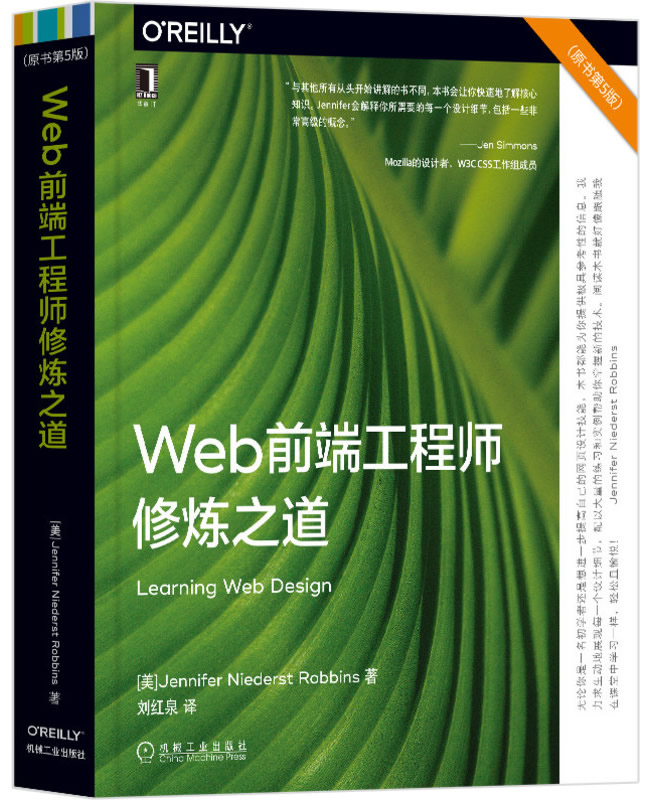

首页 > 书籍下载
《Web前端工程师修炼之道（原书第5版）》PDF下载（高清完整版）
|  | 作者：[美] 珍妮弗·尼德斯特·罗宾斯 |
| 译：刘红泉 | |
| 出版时间：2020年11月01日 | |
| 出版社： 机械工业出版社 | |
| ISBN：9787111667728 | |
| 总页数：716 |
这是一本关于 Web 前端开发的入门级图书，主要讲解前端开发的基础知识，被称为 Web 前端开发的“敲门砖”！
这里提供的是《Web前端工程师修炼之道（原书第5版）》的高清 PDF 下载，内容完整，附带目录标签。
这本书是一本完整的 Web 设计和制作的入门指南，尽管是面向初学者的，但也涉及了高级主题。作为一名 Web 前端开发工程师，不太建议小白来阅读，因为书中一些比较深入的知识点，还是要具要有一定的开发基础才可以吃透和弄懂。
《Web前端工程师修炼之道（原书第5版）》较之前的版本内容更加新颖，受到广大读者的青睐，下面是一些读者对这本书的评价：
这本书读起来很轻松，就像在课堂上学习一样，生动地展现了每一个设计细节，并且配以大量的练习和实践。
内容很不错，对工作很有帮助，知识点很全面，也包含一些比较深入的知识点，值得去学习。
书籍目录
- 第1章 Web设计入门
- 从哪里开始
- 它需要一个团队（网站创建角色）
- 为Web设计做准备
- 你学会了什么
- 自我测验
- 第2章 Web是如何工作的
- 互联网与Web
- 提供你的信息
- 关于浏览器
- 网页地址（URL）
- 网页结构
- 小结
- 自我测验
- 第3章 Web设计基本概念
- 各种设备
- 与标准一致
- 逐步提高
- 自适应Web设计
- 可访问性：所有用户一个网站
- 网站性能：连接速度的要求
- 自我测验
- 第4章 创建简单网页
- 创建网页的步骤
- 启动文本编辑器
- 第1步：从内容开始
- 第2步：HTML文档结构化
- 第3步：确定文本元素
- 第4步：添加图像
- 第5步：使用样式表改变外观
- 当网页出错时
- 验证你的文档
- 自我测验
- 元素回顾：HTML文档结构
- 第5章 标记文本
- 段落
- 标题
- 主题中断
- 列表
- 更多内容元素
- 组织网页内容
- 内联元素综述
- 泛型元素div和span
- 使用ARIA提高可访问性
- 字符转义
- 小结
- 自我测验
- 元素回顾：文本元素
- 第6章 添加链接
- href属性
- 链接到Web上的网页
- 站内链接
- 以新浏览器窗口为目标
- 邮件链接
- 电话链接
- 自我测验
- 元素回顾：链接
- 第7章 添加图像
- 图像格式简介
- img元素
- 添加SVG图像
- 自适应图像标记
- 小结
- 自我测验
- 元素回顾：图像
- 第8章 表格标记
- 如何使用表格
- 最小表结构
- 表头
- 合并单元格
- 表格可访问性
- 行和列组
- 小结
- 自我测验
- 元素回顾：表格
- 第9章 表单
- 表单如何工作
- 表单元素
- 变量和内容
- 重要表单控件综述
- 表单可访问性功能
- 表单布局和设计
- 自我测验
- 元素回顾：表单
- 第10章 嵌入式媒体
- 窗口中的窗口
- 多用途嵌入器
- 视频和音频
- 画布
- 自我测验
- 元素回顾：嵌入式媒体
- ……
书籍下载
一键登录，免费下载完整版 PDF，文件名称：《Web前端工程师修炼之道（原书第5版）》.pdf